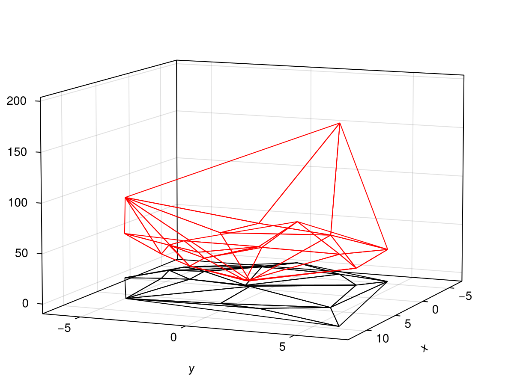

Weighted Triangulations
Here we give a brief overview of the details behind weighted Delaunay triangulations. For a more detailed description, see Chapters 2 and 3 of the book Delaunay Mesh Generation by Cheng, Dey, and Shewchuk (2013).
Parabolic Lifting Map
The definition of a weighted triangulation is derived from the idea of a parabolic lifting map. The parabolic lifting map takes a triangulation $\mathcal D\mathcal T(\mathcal P)$ of a finite point set $\mathcal p$ and projects it to a parabolid in $\mathbb R^3$ via the map $\mathcal L \colon \mathbb R^2 \to \mathbb R^3$ defined by $\mathcal L(p) = (p_x, p_y, p_x^2 + p_y^2)$. The point $\mathcal L(p)$ is the lifted compansion of $p$, denoted $p^+$. An example of this mapping applied to a triangulation is shown below.
Let $\mathcal P^+$ denote the set of lifted points. It can be shown that the projection of the underside of the convex hull of $\mathcal P^+$, meaning the projection of all faces of the convex hull with a downward-facing normal (where the positive $z$-axis points upward), is equal to $\mathcal D\mathcal T(\mathcal P)$; see Proposition 2.2 in the reference above. This is the basis for the definition of a weighted Delaunay triangulation.
Weighted Delaunay Triangulations
Weighted Delaunay triangulations allow the lifted points $p^+$ to live away from the paraboloid $x^2 + y^2$. In particular, augment each point $p_i \in \mathcal P$ with a weight $w_i$ such that the lifted point is $p_i^+ = (x_i, y_i, x_i^2 + y_i^2 - w_i)$. The point $w_i$ gives the deviation of $p_i^+$ from the paraboloid. In particular, $w_i > 0$ means the point is below the paraboloid, and $w_i < 0$ means it is below; the sign convention here is defined so that increasing $w_i$ increases its affect on the underside of the convex hull of $\mathcal P^+$, the set of lifted points. The weighted Delaunay triangulation is then defined to be the projection of the underside of the convex hull of $\mathcal P^+$.
Given this definition, it is possible that not all points will appear in the weighted triangulation, since not all faces will be projected in this case. Such points are said to be submerged or redundant.
Constructing Weighted Triangulations
The algorithm for constructing weighted triangulations is a simple modification of the standard Bowyer-Watson algorithm. The only difference is the test of whether a point is inside a triangle's circumcircle. Instead of circumcircles, we use witness planes.
From the definition of the weighted triangulation, a point will only be included in the triangulation if it is part of a downward-facing face of the convex hull of $\mathcal P^+$. The definition of the convex hull thus means that, instead of checking if a triangle's circumcircle contains a point, we should instead be checking if that point is below the plane through that triangle, i.e. the witness plane. A point that is below this witness plane is submerged.
Thus, the Bowyer-Watson algorithm can be extended to weighted triangulations by simply replacing calls to point_position_relative_to_circumcircle with calls to a predicate that checks if a point is below a witness plane. This has been implemented in the point_position_relative_to_witness_plane predicate. Care is needed for ghost triangles - if a point is being inserted onto the solid edge of a ghost triangle, we say it is below the ghost triangle's witness plane if it is not submerged relative to the solid triangle opposite the ghost triangle. The only other modification to the algorithm needed is to be careful that it is not guaranteed that there exists any triangle whose witness plane is above a new point, in which case that point's insertion should be completely rejected.